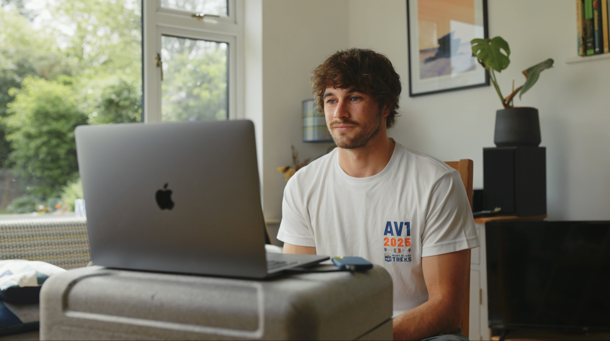
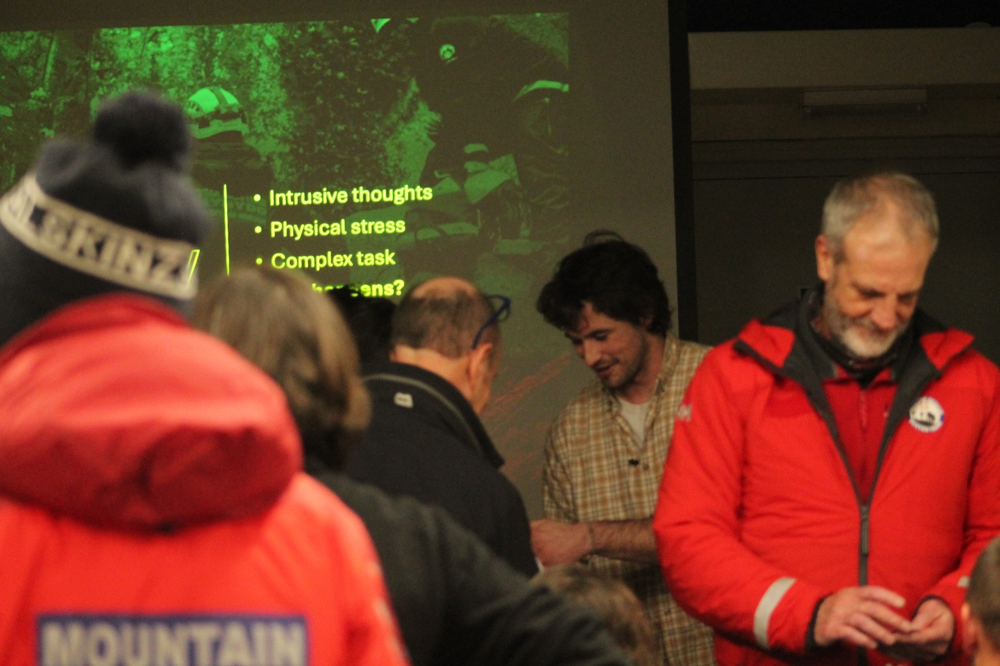
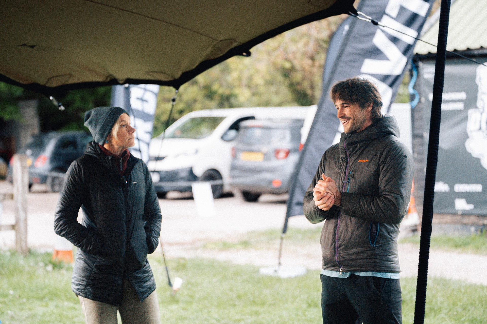

Case Studies
Work with teams in the field
Psychology delivered with organisations working in demanding, high-consequence environments.

Healthcare · Emergency
World Extreme Medicine
Managing trauma and building resilience in extreme medicine.
Read
Rescue Services
RNLI
Building resilience and processing identity transitions for frontline lifeboat crews.
Read

Search & Rescue
Northumberland Mountain Rescue
Supporting casualties with heightened emotions, and building resilience to trauma among the rescuers themselves.
Read

Search & Rescue
Buxton Mountain Rescue
Supporting casualties in heightened emotional states, and managing the stress of a callout.
Read

Ultra-Endurance
The Tor Divide
Mental preparation for ultra-distance cycling across challenging terrain and unpredictable conditions.
Read